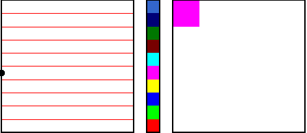

| The Kelly plot is a data representation method inspired by some of the paintings of Ellsworth Kelly. |
| By the method of coarse-graining, a sequence of data values is converted into a sequence of numbers, and each number is assigned a color. |
| Now construct an approximately square array of small squares, one for each data point. |
| Left-to-right, top-to-bottom, each small square is painted the color of the numbers, read in the order they were assigned by the data. |
|  |
| Click the picture for an animation. |
Here are some examples.
| uniform random 1 | uniform random 2 | normal | Brownian | amylase |
| logistic examples | logistic animations | tent examples | tent animation | sensitivity illistration |
Return to Background.